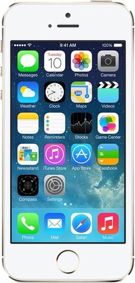

CellphoneS
Trang chủ
Điện thoại
Apple
Samsung

Apple iPhone 5S 64GB (99%)
2.890.000₫
-Thông số kỹ thuật
Hãng sản xuất: Apple
3G: HSPA 42.2/5.76 Mbps, EV-DO Rev.A 3.1 Mbps
4G: LTE Cat3 100/50 Mbps
Kích thước: 123.8 x 58.6 x 7.6 mm (4.87 x 2.31 x 0.30 in)
Trọng lượng: 112 g (3.95 oz)
SIM: Nano-SIM
Loại màn hình: Cảm ứng điện dung LED-backlit IPS LCD, 16 triệu màu
Kích thước màn hình: 4.0 inches
Độ phân giải màn hình: 640 x 1136 pixels
Hệ điều hành: iOS
Phiên bản hệ điều hành: 11
Chipset: Apple A7 APL0698
CPU: 2x 1.3 GHz Cyclone (nền tảng ARM v8)
GPU: PowerVR G6430 (4 lõi đồ họa)
Khe cắm thẻ nhớ: Không
Bộ nhớ: 64 GB, 1 GB RAM
Camera sau: 8 MP (f/2.2, 29mm, 1/3", 1.5 µm), tự động lấy nét, LED flash kép (2 tone)
Camera trước: 1.2 MP (f/2.4, 31mm), 720p@30fps, nhận diện khuôn mặt, HDR, FaceTime
Quay video: 1080p@30fps, 720p@120fps
WLAN: Wi-Fi 802.11 a/b/g/n, dual-band, hotspot
Bluetooth: 4.0, A2DP
GPS: A-GPS, GLONASS
NFC: No
Hồng ngoại: No
USB: 2.0
Cảm biến: Vân tay, gia tốc, côn quay quy hồi, khoảng cách, la bàn
Pin: Li-Po 1560 mAh